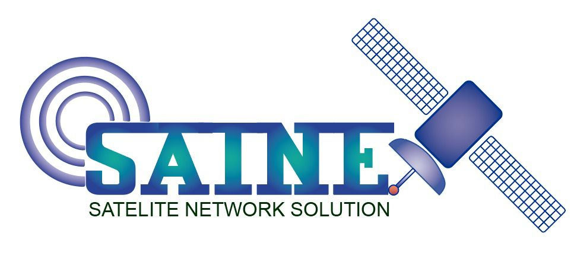

Satnet SAS Services
18. Septiembre, 2021
Conectividad Satelital
Contamos con una amplia gama de servicios, listos para suplir las necesidades de nuestros usuarios, desde personas naturales hasta pequeñas, medianas y grandes empresas tanto privadas como gubernamentales. Te invitamos a conocer mas sobre los servicios de tu interes: Servicios Corportativos, Servicios Transaccionales, Backhaul celular, Backup Satelital.
Infraestructura y Soporte
Nuestra infraestructura se extiende a través de todo el territorio nacional, incluyendo zonas remotas del país, ofrecemos servicios de infraestructura, instalación, soporte y mantenimiento para todo tipo de estructuras como antenas, torres, telefonía satelital, inventario, planos, materiales, entre otros. Conoce mas sobre nuestro portafolio: Instalación de infraestructura de instalaciones, Mantenimientos en campo, Site survey, Adecuaciones de Obra Civil para Telecomunicaciones.
Contáctanos
Te gustaria cotizar nuestros servicios para tu proyecto?
Sientete libre de contctarnos en el siguiente correo: info@satnetsas.com
¿Cómo podemos ayudarte?
SATNET utiliza las mejores prácticas para satisfacer y superar las necesidades de nuestros clientes globales del sector público y privado. Nuestro entorno flexible está impregnado de experiencia tecnológica y rigurosos estándares de cumplimiento.
No escatimamos en excelencia ni tomamos atajos. Estamos orgullosos de hacer el trabajo a tiempo y dentro del presupuesto.
Misión, Visión y Valores
Misión:
Ofrecer a nuestros clientes un servicio oportuno, de alta calidad y confiabilidad, proveer sistemas y servicios avanzados para cualquier tipo y tamaño de organización. Generamos valor a la sociedad, clientes y accionistas, y todos los grupos de interés, con una gestión innovadora, eficiente, neutral y de calidad en la prestación de servicios.
Visión:
Conservar y optimizar el posicionamiento que SATNET S.A.S ha logrado en su comunidad para obtener un futuro donde la tecnología esté al servicio, beneficio y desarrollo de nuestros clientes. Permaneciendo en la mente de la gente siempre que se piense en telecomunicaciones.
Valores:
Entre los valores institucionales de nuestra compañia y de nuestro personal se encuentran:
-Compromiso: Nos responsabilizamos de fortalecer nuestros proyectos de forma proactiva.
-Flexibilidad: Nos adaptamos al entorno en continua evolución.
-Honestidad: Demostramos integridad en nuestras actuaciones.
-Credibilidad: Lo que decimos, lo hacemos.
-Desarrollo: Favorecemos el desarrollo de las personas mediante la cohesión, la colaboración y el equipo.
-Ética: disfrutar la verdad en el mundo de los negocios, mediante el cumplimiento de los compromisos pactados.